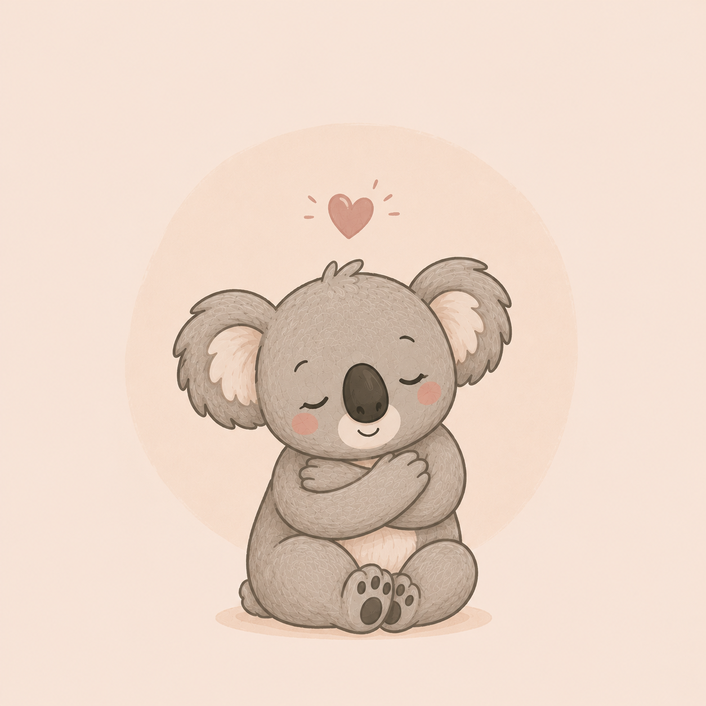

¿Qué es la filosofía koala en la psicología infantil?
Cuando decidí dar vida a este proyecto enfocado en la psicología educativa e infantil, supe que el koala sería mucho más que un logotipo entrañable; representa de manera exacta mi forma de entender y acompañar el desarrollo en la infancia.

🧩 La psicología infantil nos enseña que los niños y niñas funcionan bajo este mismo principio. Para desplegar sus alas, aprender a regular sus emociones y alcanzar sus hitos madurativos, necesitan primero un refugio seguro. Los koalas son también conocidos por sus tiempos pausados; respetan de manera estricta sus periodos de descanso y procesamiento de energía, recordándonos una premisa fundamental de la atención temprana: el desarrollo infantil no es una carrera de velocidad, sino un proceso biológico y respetuoso que requiere paciencia. ⏳
"La Filosofía Koala nace para trasladar esa misma esencia a la terapia: construir un espacio clínico y educativo de protección y calma mutua, donde cada familia encuentre orientación y cada menor se siente escuchado, seguro y profundamente respetado en su ritmo individual." ✨
Los valores de la filosofía koala
Empatía y escucha activa
Espacio seguro y libre de juicios donde cada sesión se adapta a las necesidades emocionales de la persona y su familia.
Respeto al ritmo
Sin presiones ni objetivos forzados. Cada intervención respeta los tiempos individuales para lograr avances sólidos.
Regulación emocional
Enseño a niñ@s a identificar lo que sienten, ponerle nombre y usar técnicas para recuperar la calma por sí mismos.
Material adaptado
Diseño de recursos visuales, agendas y actividades personalizadas bajo metodologías específicas para TEA y NEE.